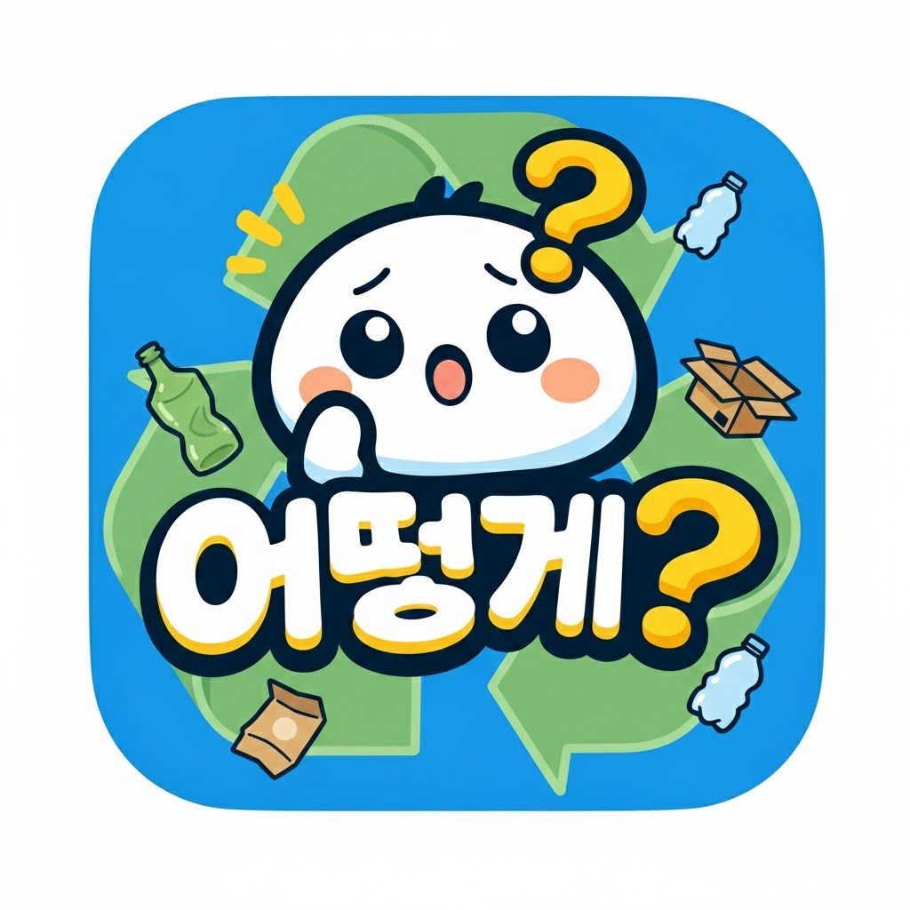
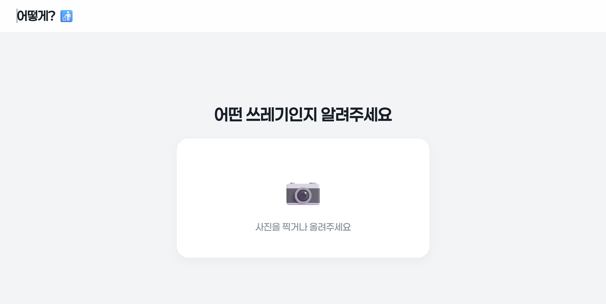
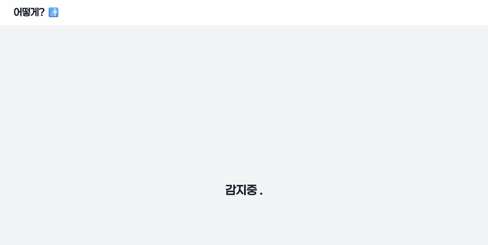
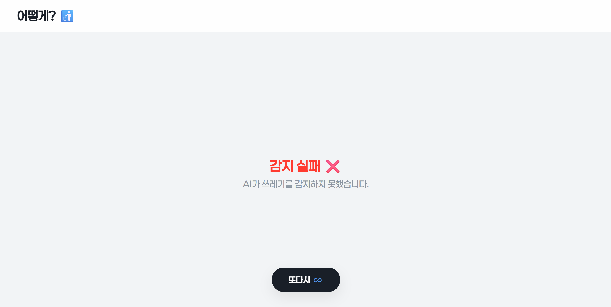
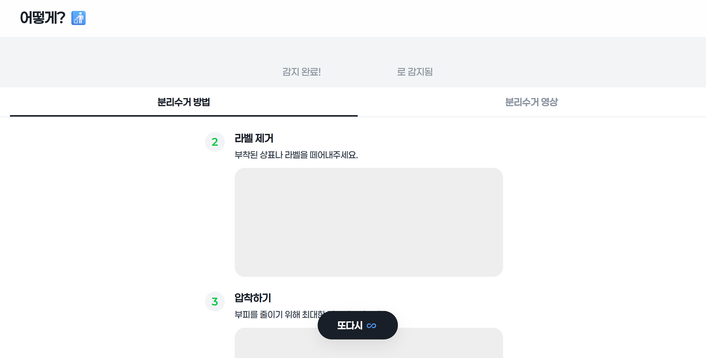

분리수거를 더 쉽게.
이렇게!
어떻게?
분리수거를 더 쉽게.
▼

시작은 사진 한 장으로
- 쓰레기 사진을 직접 찍거나 앨범에서 선택하여 업로드합니다. - 복잡한 과정 없이 사진만 올리면 AI가 자동 분석을 시작합니다.

학습된 AI의 분석
- 업로드된 쓰레기의 재질과 종류를 AI가 정밀하게 감지합니다. - 잠시 후 분리수거 정보를 제공받을 수 있습니다.
쓰레 상태에 따른 맞춤화
- 쓰레기에 음식물이나 기타 이물질이 남아있는지 확인하는 팝업이 뜹니다. - O 를 선택하면 세척, 제거 등 준비 과정에 대한 정보가 생략되어 바로 배출 단계로 안내됩니다.

감지에 실패했을 경우
- 사진이 너무 흐릿하거나, 쓰레기의 종류가 명확하지 않을 때 발생합니다. - 화면 하단의 '또다시 ♾️' 버튼을 눌러 처음으로 돌아가 다시 시도할 수 있습니다.

올바른 분리배출 방법 확인
- 감지된 쓰레기의 재질에 맞는 단계별 분리수거 방법과 영상을 제공합니다. - 모든 과정이 끝나면 하단의 '또다시 ♾️' 버튼을 눌러 처음으로 돌아가서 새롭게게 분석할 수 있습니다.
(화면을 터치하면 메인으로 돌아갑니다)
어떤 쓰레기인지 알려주세요
📷
사진을 찍거나 올려주세요
감지중 .
플라스틱
감지 완료됨!
분리수거 방법
분리수거 영상
감지 실패 ❌
AI가 쓰레기를 감지하지 못했습니다. (사진을 명확하게 다시 찍어주세요)
확인해주세요
현재 잔여물이나 부착물이
쓰레기에 남아있나요?
O
X
또다시 ♾️